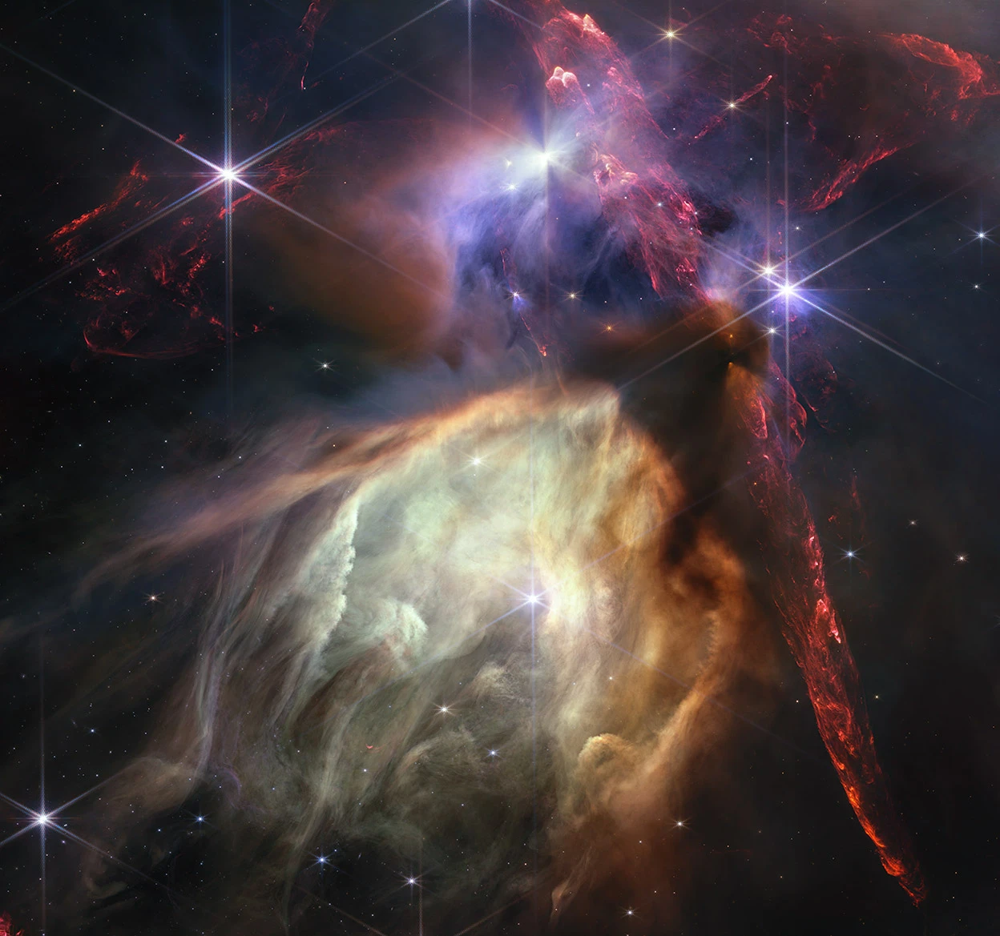
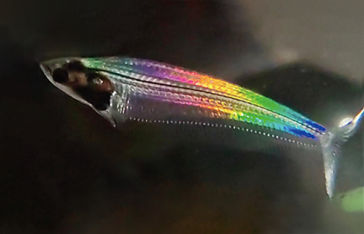
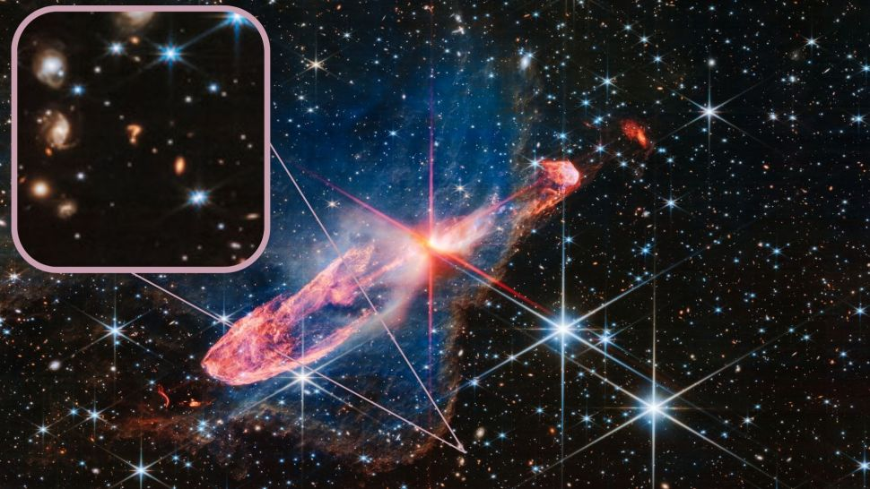
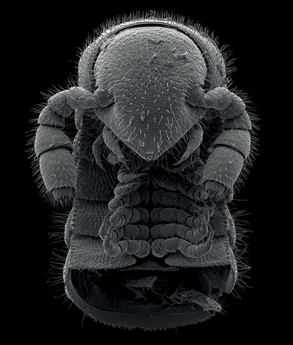
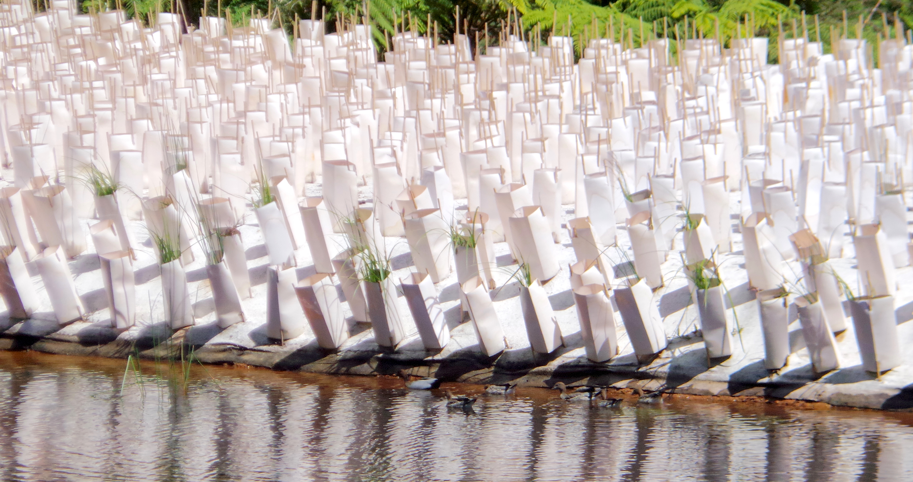

<!DOCTYPE html>
<!--- 
17/5/2024 trying bigger thumbnails for mobile viewing
16/5/2024 added extra images. On mobile, the scolling and image on-click display is not right, but on PC is fine
Possibly due to magic 1280px in doco routine. Changed screen width and height to 1920/1280
Would like onclick images to be better screen fit ( window.screen.height/window.screen.width)

13/8/2023 like it better with smaller thumbnails (200, not 500).
11/8/2023 imagelist as innerHTML works OK. Needs a bit of tidying but useable.
10/8/2023 passing arguments works. Using innerHTML needs some thought to position images in-line and not overwrite initial display.
NOTE: image names must have _, not space as in 
<html>

<style>
body {
  width: window.screen.width-200;
  height: window.screen.height-200;
}
button {
  position: fixed;
}
</style>

<body>


<div id="d0" onmousemove="scrollWin()"</div>










<br>

<script>
imagelist=''
+''
+' ';

mouseX=0;
mouseY=0;
lastx=0;
lasty=0;
moveok=true;

function scrollWin() {
if(moveok)window.scrollTo(mouseX-400, 10);  //only scroll when in series
}

function scrollM() {
  window.scrollTo(0,10); //position expanded image and inhibit moves
  moveok=false;
}

document.addEventListener("mousemove",()=>{
mouseX=event.clientX;
mouseY=event.clientY;
});

function doco(){   //doco primes image to expand and remembers where click came from
document.getElementById("d0").innerHTML='';
lastx=mouseX;
lasty=mouseY;
scrollM();    // expanded image now at screen left
}

function roco(){    //roco restores image list and clicked position in series
document.getElementById("d0").innerHTML=imagelist+'';
window.scrollTo(lastx,10);
moveok=true;                   //restore moves within series
}

</script>

</body>
</html>
